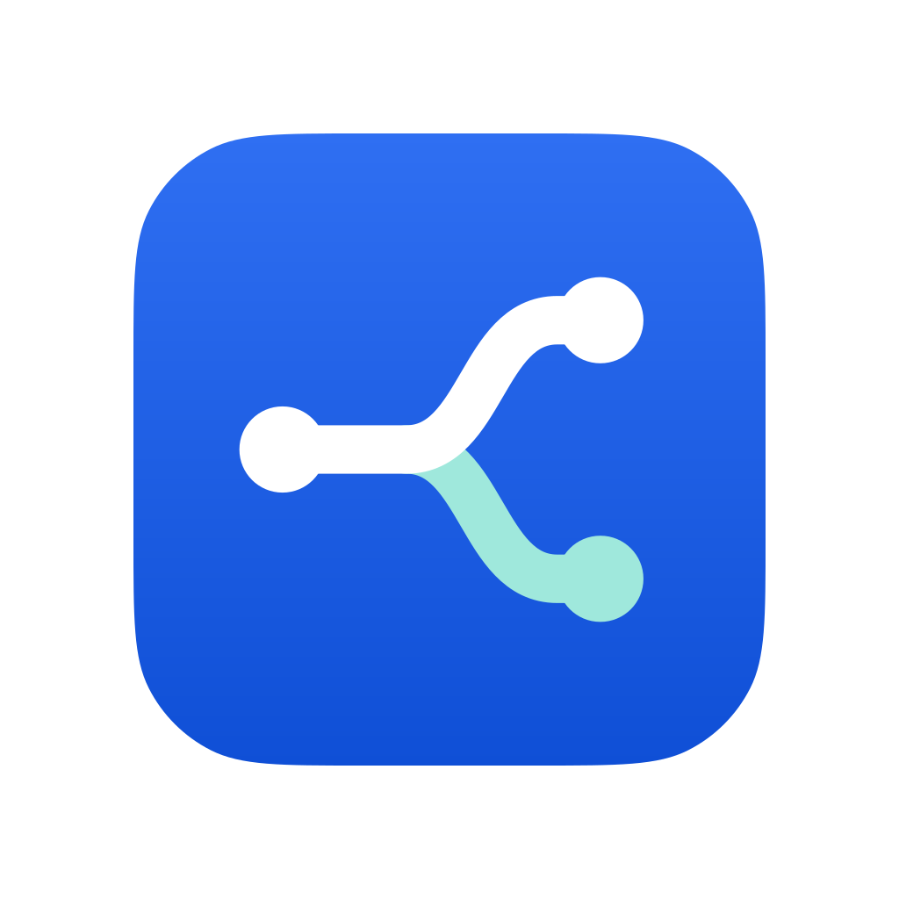

MintSwitch — Hệ logo cuối (Concept A · Route Switch)
Wave 2 · bộ bàn giao trong design/logo-final/. Trang này tĩnh hoàn toàn (không JS) — mở trực tiếp để duyệt. Chưa tích hợp vào mã nguồn; asset sản phẩm hiện tại không bị thay đổi.
1 · Hình học & căn quang học
Lưới 48 · nét 4.5 round-cap · node r 4. Tinh chỉnh so với Wave 1: control point đối xứng (27,24)/(27,12|36) cho cả hai nhánh; nhánh chạy ngang từ x=34 và kết thúc đúng tâm node (38,12|36) nên đầu nét được node che phủ — mối nối liền mạch ở mọi kích thước. Ink bounds x 4.5–42, y 8–40 (37.5×32). Khối hình nặng bên phải (2 node đầu mút) → khi đặt trong khung vuông, dịch trái 0.75 unit: crop chuẩn viewBox="4 4 40 40" cho tâm thị giác (24,24).
4 4 40 402 · Biến thể màu / mono / light–dark
Bản mono nhúng inline sẽ nhận màu chữ hiện hành; trong app map vào var(--accent) hoặc var(--text). File favicon.svg tự đổi bảng màu theo prefers-color-scheme.
3 · Thang kích thước 16 → 1024 px
Render trực tiếp từ SVG (crop vuông favicon.svg). Cấu trúc “1 tuyến vào → 2 nhánh + 3 node” phải còn đọc được ở 16 px.
Nền sáng
Nền tối
1024 px (app icon, kích thước thật)

4 · Grayscale & nền trong suốt
Hai tuyến vẫn phân biệt được khi mất màu nhờ chênh độ sáng (mint sáng hơn blue) và cấu trúc trên/dưới; mọi file đều không có nền — an toàn trên nền bất kỳ.
5 · App icon & mask bo góc
Nguồn app-icon.svg là tile vuông full-bleed 1024 (gradient #2f6ff2 → #0f4fd6, mark trắng + mint nhạt #9fe8dc) để pipeline nền tảng tự áp mask. Mark chiếm 600×512 (≈59% cạnh), nằm gọn trong safe zone của cả squircle lẫn mask tròn.
6 · Wordmark lockup, khoảng trống & kích thước tối thiểu
Typography khớp UI hệ thống: system stack, weight 700, tracking −0.01em (đúng token --fw-bold/--tracking-tight của app). Chữ trong lockup là <text> trên system stack; chỉ outline thành path nếu dùng ngoài môi trường có font hệ thống.
Khoảng trống (clearspace)
- Mark tối thiểu: 16 px (UI), 12 px chỉ khi hệ render cho phép fractional AA tốt.
- Lockup tối thiểu: cao 20 px; dưới ngưỡng này dùng mark đơn.
- Không đặt mark lên nền nhiễu/ảnh mà không có lớp nền pill trơn.
7 · Thông số màu
| Vai trò | Light | Dark | Token đề xuất | Tương phản |
|---|---|---|---|---|
| Tuyến chính + node | #135bec | #4d8dff | var(--accent) | 5.62:1 trên trắng · ≈5.0:1 trên #212124 |
| Tuyến phụ (mint) + node | #0d9488 | #2dd4bf | --mint (token mới, đề xuất) | ≈3.75:1 trên trắng · ≈8.6:1 trên #212124 |
| App-icon tile | gradient #2f6ff2 → #0f4fd6 | var(--brand) gốc | mark trắng ≥4.49:1 · mint nhạt #9fe8dc ≥3.22:1 | |
| Mono | currentColor | var(--accent) / var(--text) | theo ngữ cảnh | |
8 · Quy tắc sử dụng
- ✓ Dùng đúng crop vuông
4 4 40 40cho mọi ngữ cảnh icon vuông (favicon, tile, avatar). - ✓ Trong UI, dẫn màu qua token (
var(--accent)+--mint) để mark tự khớp theme. - ✓ Trên nền brand/gradient đậm: dùng bản mark trắng +
#9fe8dcnhư trong app icon. - ✗ Không đổi tỷ lệ nét/node, không xoay hay lật mark (hướng trái→phải mang nghĩa định tuyến).
- ✗ Không dùng bảng light trên nền tối và ngược lại; không thêm hiệu ứng bóng đổ/viền.
- ✗ Không tự dựng lại wordmark bằng font khác; giữ weight 700, tracking −0.01em.
File trong bộ: mark-master.svg · mark-dark.svg · mark-mono.svg · favicon.svg · app-icon.svg · lockup-light.svg · lockup-dark.svg · brand-guide.html. Tích hợp vào mã nguồn thuộc wave sau (cần phê duyệt riêng).